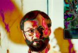

Das Programm von Holger Uske trägt den Titel seines Ende 1999 erschienenen Buches „Magische Momente". In bewährter Weise verknüpft der Autor darin wieder neueste Texte und Lieder zu einem etwa einstündigen Programm. Am 22. Juni 2000 hatte es in seiner Heimatstadt Suhl Premiere. Erstmals brachte er dabei auch Lieder gemeinsam mit jungen Musikern aus Suhl zu Gehör: Mario Götz, Markus und Sebastian Holzbrecher und seinem Sohn Johannes Uske. Erstmals setzte der Autor dabei bei seiner Suche nach den magischen Momenten in der Welt auch eine Sitar zur musikalischen Bereicherung des Angebotes ein.

Der Autor bei einer seiner Lesungen.
Aus der Rezension im „Meininger Tageblatt" vom 24.06.2000
Lieber feine Netze als feste Stricke
Holger Uske zählt auf die feinen, leisen und für nüchterne Zeitgenossen wohl auch unsichtbaren Geister. Er bekennt sich zu den Elfen („Wir schweben viel zu selten") oder hört lieber auf sein unsicheres Herz (in „Unruhig"). Er scheint regelrecht in Magie zu schwelgen, wenn er im Vortrag immer wieder die Augen schließt. Viele Gedichte sind Einladungen, sich auf die magischen Momente einzulassen. In einem Gedicht wird ihre beinahe aussichtslose Lage geschildert, wenn sie „blau gefroren über den Dächern ausharren". „Nimm sie an die Hand", lautet Uskes wichtigste Regel im Umgang mit dem scheinbar Unscheinbaren … In diesem Sinne lässt Holger Uske anklingen, was für ein filigranes Gewebe die behutsam gesetzten Worte sein können, … beim Knüpfen eines Netzes aus Tagen, „unermüdlich, fein".
(Gerd Pospischil)
Textauszug
Magische Momente (I)
Manchmal
Über den Dächern
Vom Ausharren beinahe
Blau gefroren
Sehn sie dich an
Nimm sie an die Hand
Vielleicht wartet ein Freund
Auf sie, das Vergessen
Vielleicht
Aufführungen dieses Programms: v. a. in Thüringen, Ausschnitte auch zu den Literaturtagen Rheinland-Pfalz in Mainz und in den Niederlanden